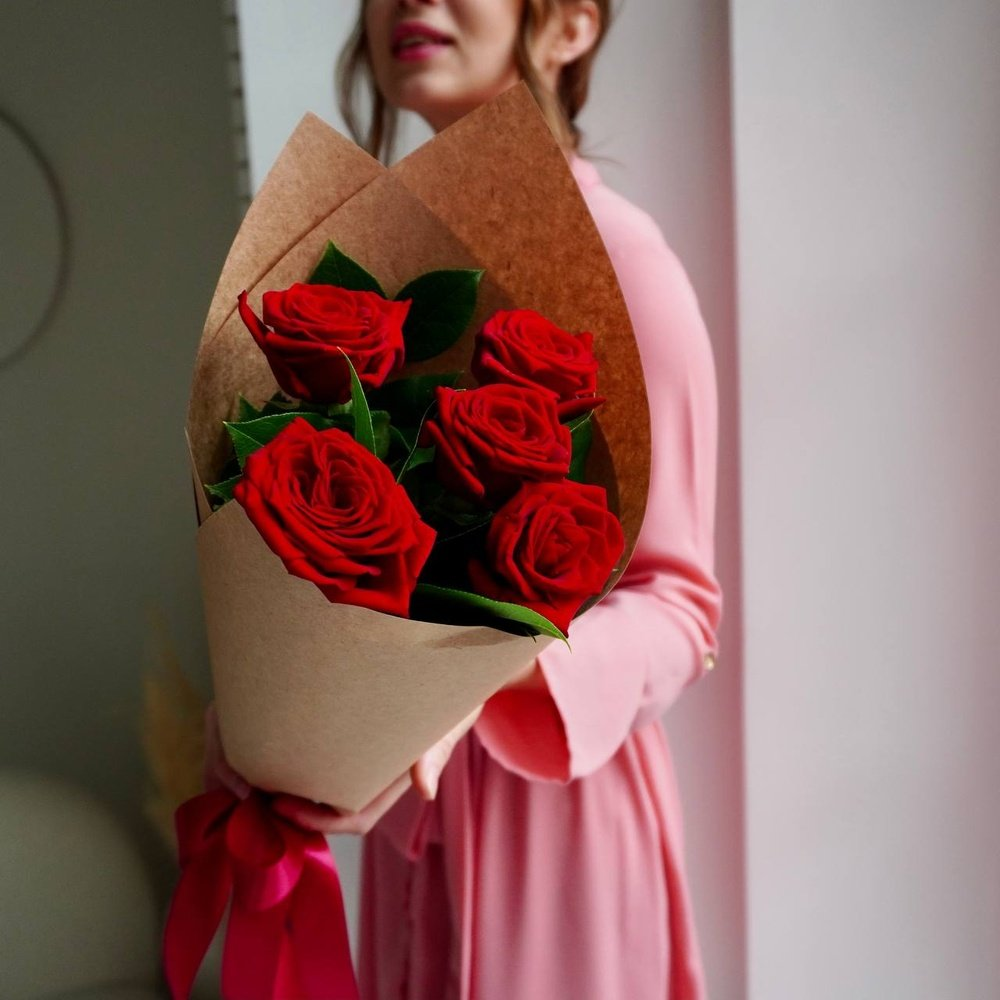
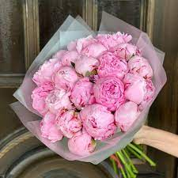
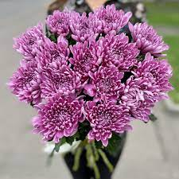

Ласкаво просимо до нашого магазину роз, де ви знайдете найвишуканіші та найкрасивіші сорти цих чудових квітів. Рози - символ кохання, ніжності та елегантності. Незалежно від того, чи ви хочете прикрасити свій сад, підняти настрій своїй улюбленій людині або створити неперевершений букет для особливого випадку, ми маємо все, що вам потрібно.У нашому магазині ви знайдете широкий асортимент роз різних кольорів, сортів і розмірів. Ми працюємо з провідними виробниками, які дбають про якість своїх рослин. Наші рози вирощуються з любов'ю та увагою до деталей, що гарантує їх здоров'я, довговічність та привабливість. Ми пропонуємо рози різних сортів, включаючи гібридні, трав'янисті, кущові та маємо різноманітність кольорів, від класичних червоних та рожевих до екзотичних жовтих, оранжевих та білих.
Ласкаво запрошуємо до нашого магазину піонів, де ви знайдете найвишуканіші та найкрасивіші сорти цих унікальних квітів. Піони - це справжні чарівники, що заворожують своєю величезною красою та неперевершеними ароматами. Незалежно від того, чи ви прагнете прикрасити свій сад, створити чудовий букет або приголомшити своїх близьких особливим подарунком, ми маємо все, що вам потрібно.У нашому магазині ви знайдете великий асортимент піонів різних сортів, кольорів та форм квітів. Ми співпрацюємо з високоякісними постачальниками, які дбають про здоров'я та вигляд своїх рослин. Наші піони вирощуються з любов'ю та увагою до деталей, що гарантує їх свіжість, довговічність та неперевершену красу. Ми пропонуємо піони різних сортів, включаючи древовидні, кущові та піони-трав'янисти. Крім того, у нас є різноманітність кольорів, від класичних рожевих та білих до вишуканих червоних, фіолетових та коралових.
Ласкаво запрошуємо до нашого магазину хризантем, де ви знайдете найчарівніші та найколоритніші сорти цих вражаючих квітів. Хризантеми - це символи краси, гармонії та вдячності. Незалежно від того, чи бажаєте впровадити їх у свій сад, створити вражаючий букет або подарувати близькій людині, ми маємо все необхідне.У нашому магазині ви знайдете широкий асортимент хризантем різних сортів, кольорів та форм квітів. Ми працюємо з надійними виробниками, які забезпечують високу якість своїх рослин. Наші хризантеми вирощуються з любов'ю та увагою до кожної деталі, що гарантує їх свіжість, довговічність та красу. Ми пропонуємо хризантеми різних сортів, включаючи групові, одиночні та пухнасті варіанти. Крім того, у нас є різноманітність кольорів, від яскравих червоних та жовтих до ніжних рожевих, білих та фіолетових.
